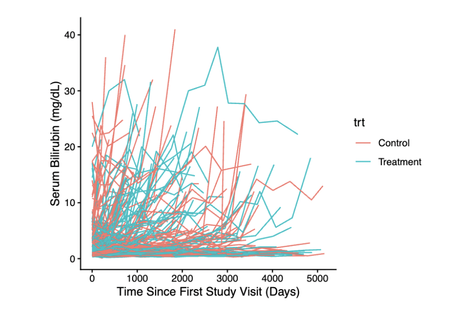
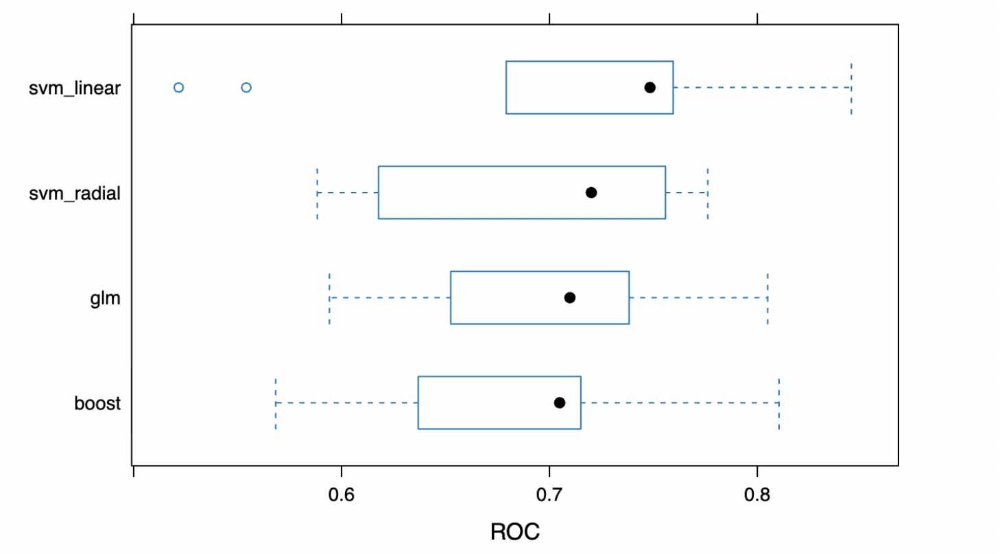

Projects
My portfolio includes both health- and sports-related projects.
Table of Contents
🧬 Biostatistics & Health
1. DNA Methylation Analysis within the TCGA-BRCA Study

Motivation
Are there systematic differences in DNA methylation between tumor tissue
and healthy tissue in patients with breast cancer?
Data & Methods
The Cancer Genome Atlas (TCGA-BRCA)
Sample: 27 patients with matched tumor and healthy tissue
Beta values for ~24,000 CpG sites per patient
Key Results
PCA revealed clear separation between tumor and normal tissue samples
After FDR adjustment, over 600 CpG sites exhibited significant hyper- or hypomethylation in tumor tissue
No strong relationship was observed between differential methylation and genomic location
Links: 📄 Final report (PDF) | 💻 GitHub repository
2. Longitudinal Analysis of D-Penicillamine in Primary Biliary Cirrhosis

Motivation
Does the copper chelating drug D-penicillamine lead to meaningful
improvements over time in patients with primary biliary cirrhosis
(PBC)?
Data & Methods
Mayo Clinic (pbcseq dataset, R survival package)
Response variable: serum bilirubin (mg/dL)
Linear mixed model (random effects for each study participant)
Fixed effects for clinical indicators of liver disease, blood clotting measures, and demographics
Key Results
Serum bilirubin levels generally increased over time, consistent with progressive liver deterioration, and were associated with multiple clinical markers
No statistically significant effect of D-penicillamine on serum bilirubin
Findings are consistent with prior evidence indicating limited clinical benefit and increased risk of adverse outcomes, contributing to the discontinuation of the treatment in practice
Links: 📄 Final report (PDF) | 💻 GitHub repository
3. Building Machine Learning Models to Predict Incidence of Severe Flu

Motivation
Which type of machine learning model is most effective with respect to
predicting the risk of severe flu within six months of vaccination?
Data & Methods
Columbia University (P8106: Data Science II course materials)
Response: severe flu within six months of vaccination (binary)
Predictors: demographic variables, smoking history, BMI, comorbidities (diabetes, hypertension), blood pressure, LDL cholesterol
Supervised classification models: logistic regression, boosting, SVMs
Model comparison using cross-validated AUC
Key Results
Support vector machines with a linear kernel achieved the highest AUC, though performance differences across models were modest
Logistic regression was selected as the final model to prioritize interpretability with minimal loss in predictive performance
Current smoking status and higher BMI were associated with increased risk of severe flu
Links: 📄 Final report (PDF) | 💻 GitHub repository